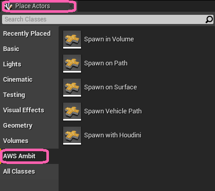

Ambit Static Item Generation¶
Ambit provides several drag-and-drop tools to enable easy placement of static items in your simulation scenarios. The collection of these tools are referred to as Ambit Spawners.
While there are variations between these tools, the three of them share most of their functionality. Spawn in Volume and Spawn on Path have a couple of extra parameters, since they provide higher level of customization, but they work in a similar way to Spawn on Surface.
All Ambit Spawner tools utilize two of Unreal Engine's custom collision channels: ECC_GameTraceChannel1 and ECC_GameTraceChannel2. These are used for collision detection by the obstacles spawned by the Ambit Spawner tools.
These actor classes can be found in the AWS Ambit category of the Place Actors panel.

How To Use Spawners¶
You can use one or more Spawner instances within a scene. To add an instance, drag-drop the Spawner class from the the AWS Ambit category tab in the Place Actors panel or Content Browser into your map. You'll find the classes under "Ambit C++ Classes/Ambit/Actors/Spawners".
After you place the spawners in the viewport and setup all parameters, you can enter the play mode by clicking the play button and it will spawn the assets.
How To Use Tags
CAUTION! The UE Editor's UI for adding actor tags is confusing. Be sure to follow the steps below when using tags.
To tag an actor, follow these steps:
-
Select the actor in your map or in the World Outliner.
-
In the Details tab, use the "Search details" field to search for the word "tags". You will see the following. Use the Actor > Tags array property, not the Tags > Component Tags array property. You can add tags clicking the ✚ icon. You can delete a tag by clicking the ▾ icon next to the tag and selecting "Delete".